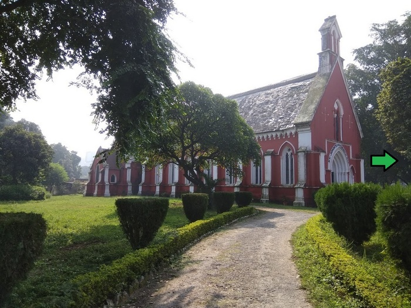

|  |
AboutSt johns church, Roorkee is a perfect destination for a great time with your dear ones. Enjoy the attractions of this popular tourist spot. With so much to lure your senses and offer you recreation at its best, get drenched in the spirit of adventure that you get to explore at st johns church, Roorkee. Enjoy together all the points of popular interests and bring back several memorable moments. st johns church, Roorkee is not just the place for sightseeing, but it also enables you to steal a self-indulgent moment for yourself as well. So, check out the st johns church tourist spot for all the attractions that is on offer and visit this spot on weekends for a rejuvenating time. World standards, extraordinary architecture, innovative layouts, and well-thought execution make place a highly coveted point of tourist interest. Do not forget to carry your camera and capture special moments. st johns church, Roorkee is the sure way to refresh and relax after a busy weekday. So, enjoy a fulfilling outing at st johns church in Roorkee. Check it out! |
Click on the arrow to move forward.